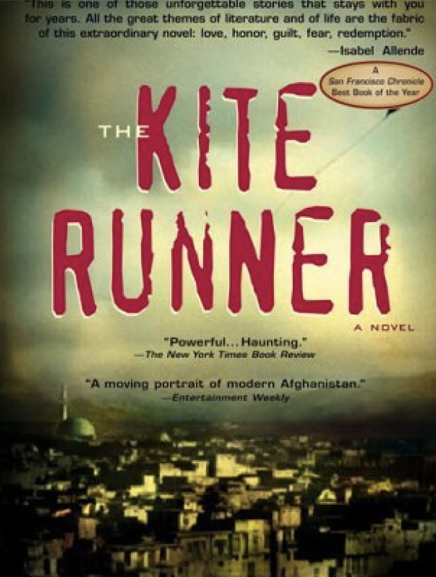

Welcome!

Kite Runner Connection
In the Kite Runner, the most prominent social injustice that’s discussed in the novel is racial and religious discrimination. The two main characters are not only of different classes but one of them faces extreme discrimination because of his ethnic and religious identity. Because he is a Hazara he is disrespected and endures prejudice throughout the entire novel. Hosseini is an activist who highlights the issues within Afghanistan through his novels. The heart-wrenching story he tells is hard to read but truly tells the very real reality of Hazaras that brings awareness to those who did not know the injustice towards this minority group.